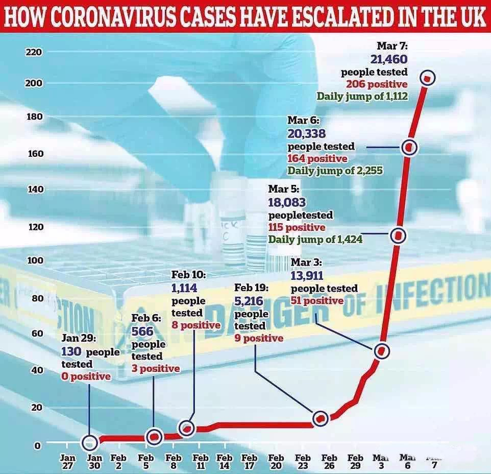
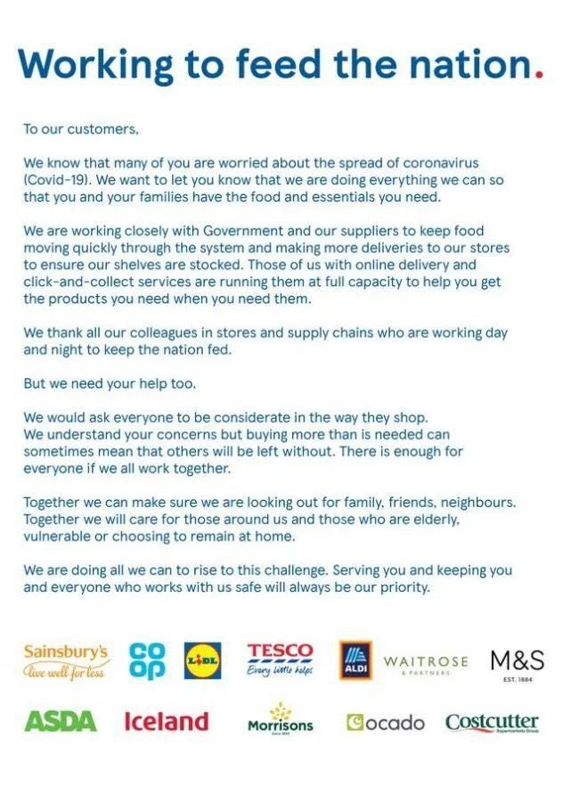

现实浇醒了英国人：不再无视戴口罩，如今华人买什么他们就买什么
原文链接 备份链接 意大利确诊数破千时，大部分英国人还在隔岸观火，有人甚至拿新冠病毒开玩笑。如今英国人聚集的社交网络上多的是祈祷上帝保佑的推文。有人调侃说，老外都跟在华人后面逛超市，华人买什么他们就买什么 文 | 文静 编辑 | 孙爱民 …

意大利确诊数破千时，大部分英国人还在隔岸观火，有人甚至拿新冠病毒开玩笑。如今英国人聚集的社交网络上多的是祈祷上帝保佑的推文。有人调侃说，老外都跟在华人后面逛超市，华人买什么他们就买什么

文 |《财经》驻英国特约作者 文静
编辑 | 孙爱民
谁也没想到英国会在全球抗疫中以这样的方式登上热搜。“群体免疫”的政策主张一提出，国内外都炸了锅。我和先生定居英国多年，深知英国NHS（国家医疗系统）的脆弱，但还是没料到在这么强大的病毒疫情面前，有专家会给政府出这样的奇招。近日中国很多朋友发来慰问，想知道在英国的华人同胞们到底在经历些什么？从我个人经历来看，这次疫情暴发前后，真有坐过山车一般的遭遇。
今年2月底，新冠疫情在意大利确诊数破千时，大部分英国人还在隔岸观火，有人甚至拿新冠病毒开玩笑，比如将coronavirus（新冠病毒）比成恰巧同音的一款啤酒corona，准备靠黑色幽默获得神奇的免疫力。所幸，这家啤酒公司还没出来找大家损害其商誉的麻烦。

从我们在英国工作生活周边和网络上的一些言论，也可以一窥本国人对病毒的态度：
“上次你得流感是几年前？——我是20年前了。”——语气傲娇。
“这个病毒只有老年人死亡率高，年轻人得了也没事。”——你是专家吗？
“我们英国人可是经历过两次世界大战都活下来的人。”——……
相比英国人的普遍冷静，部分在英国的华人群体则走向另一个极端。毕竟从2019年12月底到今年2月份，中国的艰苦抗疫轰轰烈烈，海外华人们在社交媒体看到太多生离死别，和国内家人视频大家都语气严肃，警告我们待在家里，早日囤货。
在这样的警觉下，很多华人一看到意大利的确诊数，就早早买了口罩。有在英国的香港朋友2月底就在亚马逊商城买了3箱口罩，寄回国一半，自己留一半。当时还是买2送1，价格大概6英镑一包，折合人民币不到50元，我们还觉得有点夸张了。谁知大概一周多的时间，亚马逊就开启限购，需要有牙医或特殊医疗用途证明才能买到，直到3月中旬全部下架。
英国确诊病例维持个位数时，英国首相鲍里斯·约翰逊主要宣传多洗手，打喷嚏遮挡嘴，每次洗手唱两遍“生日快乐歌”，并没有提到口罩和其他措施，也许是为了不引起公众恐慌。
在相当长一段时间里，面对疫情蔓延，不少英国人继续喝着啤酒唱着歌，要开party一样。华人社区则忧心忡忡，觉得是时候购买洗手液等消毒用品了。
疫情急速蔓延
很快，英国人就发现，病毒和疫情的蔓延速度超出了所有人的预期。进入3月短短数天，英国的确诊数量飙升，3月初从个位数突破50人。

英国政府终于坐不住了，3月3日公布了行动计划，分四个阶段：控制，拖延，研究，缓解。然而，不到一周就宣布控制失败，直接进入拖延阶段！感觉第一阶段完全没有存在的必要。病毒之前主要集中在伦敦，后来离我们所在的小城越来越近，距我家车程5分钟的地区出现了确诊病例，是一位去过意大利的小学教师。附近唯一一所大医院出现了一例死亡病例（70岁左右）。伦敦作为金融中心，感染数字每天都在飙升，占全英国确诊数量一半左右。
我们开始担心孩子，计划让娃回家不去幼儿园了。但学校的老师以及其他英国家长依然“迷之淡定”，出入如常。我和同事讨论，为什么英国人不爱戴口罩，他说因为他们从小没见过口罩，平时诊所连医生护士都不戴口罩，觉得只有生病才需要戴。
但华人不管这些，纷纷顶着巨大的压力戴起了口罩，常常被路人以复杂目光注视，每次去超市都要给自己做好心理建设：怕死不可笑，死了才可笑。
当时国内流传一个视频，意大利议员在国会戴口罩被嘲笑随后暴怒，他也说出了我们的心声：“如果你们聪明，就应该也赶快戴上！”
期间，我家3岁的娃摔破头还去了一次急诊，医生、护士和急诊室的病人都没有戴口罩，还和往常一样谈笑风生，其中有一位护士疯狂咳嗽，也没人躲闪。只有我和先生轮流带着孩子在通风处站着，远离所有人。说实话，这种反差真是我距离“文化冲击”这个词最近的一次。
我和先生觉得是时候囤货了，本以为算行动快的，没想到伦敦中国超市里的米面已经所剩不多并迅速涨价。华人群里有人甚至购买冰柜囤货。朋友婆婆是英国人，不太理解她的囤货行为，直到一周后超市连洗手液都买不到了，英国婆婆开始着急，跑到一个很远的超市买回来跟她说，“我去超市拿走了货架上最后三瓶洗手液，心里还有点愧疚。”
最好笑的是，不知哪里来的传言，说英国的厕纸主要是中国生产的，而且和口罩是一种原料，英国人很快就没有厕纸供给了，于是大家开始疯狂囤厕纸——遭到全球群嘲。
争议“群体免疫”论
3月13日，英国政府首席科学官发表了提出群体免疫概念的著名讲话，鲍里斯还在此基础上加上了一句“我们将失去挚爱亲朋”。——舆论瞬间发酵，WHO以及英国医学专家都对这种说法进行了抨击，说英国是在拿人命冒险。
在英国的华人更不淡定了。直接效果就是各大航空公司的机票价格忽然哄抬，一些人甚至讨论要包机回国避难。国内的亲人也劝我们赶快回去。

（3月19日携程从伦敦飞北京经济舱的单程机票价格，飞行时间都超过30小时）
演讲如同一瓢冷水，终于浇醒一部分英国人，最直接的改变是：越来越多英国人也开始往超市冲；需要配送服务的很多商家开始推行零接触送货（放下就走，无肢体接触）。零售商、幼儿园、活动中心等纷纷致信消费者，称自己的店铺、工作环境等都经过了严格消毒，可以最大程度保证安全，隔绝病毒。
一些流言开始在华人圈肆虐，有人说包机是骗局，警告大家不要上当，也有说政府隐瞒消息了，真实死亡案例比公布的要多，有开始倒卖中药的，还有很多华人被种族歧视——有华人店铺收到威胁信，用恶毒肮脏的语气攻击中国人；中国留学生被外国孩子聚众殴打……
——这些坏消息让不少在英国的华人胆战心惊。
一百八十度转弯
就在群情激愤全球声讨英国政府时，3月16日，鲍里斯话锋一转，在最新疫情公告中语气严肃通知70岁以上老年人在家自我隔离，其他人则保持社交距离。很多人猜测鲍里斯是“欲擒故纵”，假装不作为，以激发民众的紧张情绪。真假不得而知，但效果还挺明显，英国人开始重视防疫，跟着囤积各种物品，大大小小的超市真的空了。

但我觉得鲍里斯并不是在虚张声势，因为NHS常年缺乏床位、资源，全英格兰只有8个实验室可以做核酸检测，这是大家都知道的事实，英国目前当务之急就是减缓增长曲线，不让大量重症导致NHS崩溃。据流出报告显示，政府最终预测这次疫情会导致26万人死亡。他无情的讲话可能只是早早摊牌而已。
以英国的非紧急医疗求助电话111为例。平时该电话接通大概需要20分钟左右，急救人员或护士会通过电话回答一些有关基础病的问题，多数就是个心理安慰，情况严重的会建议你去看社区医生。疫情爆发以来，政府不让疑似患者自行去医院，建议先打电话给111，由于流量过大，人手不够，打通基本要30分钟到1小时，很多人都放弃了。
3月16日后，英国政府公布了轻症患者出现症状自行隔离在家14天，医院只有能力收治重症。111电话的提示音也变了，内容令人心凉：“如果你是轻症患者，不必告诉我们，请自行在家隔离。如果你需要隔离建议，自行在官网查找，电话不会提供。除非你症状严重，呼吸困难，日常生活无法继续，否则你不需要和我们通话。”
3月17日，我儿子突然发烧38度，伴随咳嗽，我怀疑是普通感冒，但也隐隐担心。我们打给111确认，结果对方说医院和急诊目前都不收治轻症，也不做测试，根据我们的情况，只让孩子在家隔离。我们也不敢冒险去医院，于是只能在家，还好儿子很快退烧了。朋友中不止我们一家有类似情况，瞬间感受到什么叫无助和靠自己。以英国的医疗条件，也许这场持久站真的只能凭借自身免疫力。
学校纷纷关闭
3月18日，意大利单日死亡创下新高475例，英国总的死亡人数达到104人。在大家（主要是华人）的期盼下，在意大利、法国、西班牙早已采取关闭措施后，在英国提出群体免疫不到一周后，鲍里斯终于宣布英格兰关闭所有学校，建议私校和幼儿园也关闭，只留下一部分人力照顾医护人员、警察、社工、送货司机等关键岗位人员的子女，并继续提供很多家庭非常需要的学校免费午餐。建议70岁以上老人和孙辈分开隔离。
鞋子终于落了地。英国华人们心也稍微安稳了一点。朋友圈有人调侃说，老外现在都跟在华人后面逛超市，华人买什么他们就买什么。

（全英12家超市近日联名发信，称会尽全力确保日常货品供应）
很多本地雇主都出台应急预案，包括轮岗，部分甚至所有员工在家工作等措施，相信离全面回家办公，伦敦封城也不远了。身边很多人在网上注册了志愿者，给70岁以上的隔离在家的独居老人送日常物资等。部分超市和药房开放了“老年人专门购物时段”，确保老人日常生活正常进行。

（来自3月17日，YouGov针对2000多名英国人做的调研，依然有41%的人不准备待在家里）
关闭学校能否实现鲍里斯说的放缓增长速度的目的？英国迟缓反应是否已经让大家错过了最佳机会？没人知道答案。
截稿前，我身边的英国人表面看上去依然镇静，不知道这种淡定还能坚持多久。一个重要变化是，英国网络社交媒体上近日已很少有关于新冠病毒和疫情的黑色幽默了，取而代之的是纷纷祈祷上帝保佑的推文。

▲点击图片查看更多疫情报道
责编 | 蒋丽 lijiang@caijing.com.cn
本文为《财经》杂志原创文章，未经授权不得转载或建立镜像。如需转载，请在文末留言申请并获取授权。
原文链接 备份链接 意大利确诊数破千时，大部分英国人还在隔岸观火，有人甚至拿新冠病毒开玩笑。如今英国人聚集的社交网络上多的是祈祷上帝保佑的推文。有人调侃说，老外都跟在华人后面逛超市，华人买什么他们就买什么 文 | 文静 编辑 | 孙爱民 …
原文链接 备份链接 新冠肺炎疫情期间，少出门、勤洗手、戴口罩已经深深地刻在国人脑子里。不过，在疫情逐渐扩散的欧洲，戴口罩的反而成为异类，可能被“歧视”。 女议员因戴口罩被赶出议会大厅 根据当地时间3月3日18时意大利卫生部公布的最近数据， …
原文链接 备份链接 “ - 疫 情 之 下 - 疫情没有结束，我们的工作仍在继续。在这场“战疫”中，我们的付出终有所获，经营户对我们的理解，人民群众对我们的信任，鼓舞着我们在疫情蔓延的环境下不断向前。 ” 我的朋友是一名市场监督管理所的 …
原文链接 备份链接 【编者按】 28日，我们收到了一位名为“尘香”的读者来信，她是武汉人，退休在家，和丈夫、女儿、女婿一起留守在武汉市江汉区：截至2020年1月29日24时，武汉市累计报告新型冠状病毒感染的肺炎病例已达2261例，死 …
原文链接 备份链接 昨日收到close buildings的通知，重新开放不知何时。最近每天从网上接受着周遭的消息，从窗外看出去只有一小方路面，虽然依旧车流不息，每天傍晚依旧跑步的跑步，遛狗的遛狗，遛娃的遛娃，但颇有咫尺千里之感。掐指一 …